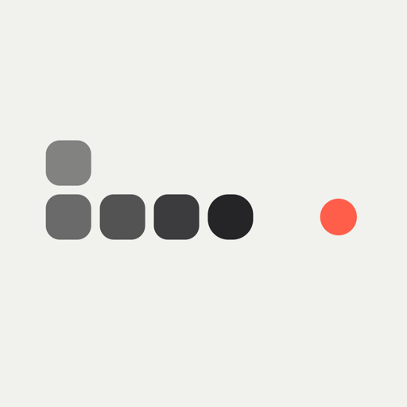

Support
Swift Snake
Contact
-
Get in touch
Found a bug or have an idea? Email indigo@michaelcheng.dev and include your device model and iOS or watchOS version.
Frequently Asked Questions
-
How do I play?
Tap Play, then swipe in any direction to steer. Eat the food to grow and score points. The round ends if you run into a wall or your own tail.
-
How do I steer on Apple Watch?
Swipe on the screen, or turn the Digital Crown. Turning it one way turns the snake right, the other way turns it left, relative to where it's heading. Tap the screen to pause.
-
Where are the settings?
Tap the sliders button next to Play. Settings are available between rounds, so the button is hidden while a round is in progress.
-
What do the difficulties change?
Easy, Medium and Hard set how fast the snake moves.
-
What does Wrap Around Walls do?
With it on, the snake leaves one edge of the board and comes back on the opposite side instead of crashing.
-
Is my game saved if I leave?
Yes. If you leave the app mid-round, the game pauses and saves automatically. Open the app again and tap Resume to continue.
-
Why aren't my settings syncing with Apple Watch?
On iPhone, open Settings in Swift Snake and make sure Sync with Apple Watch is on. Your Apple Watch needs to be paired with your iPhone and have Swift Snake installed. Changes can take a moment to arrive.
-
Is my best score shared between devices?
No. Each device keeps its own best score, so your iPhone and Apple Watch each have their own record to beat.